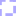

<!doctype html>
<html lang="en">
    <head>
        <meta charset="utf-8">
        <meta http-equiv="X-UA-Compatible" content="IE=edge">
        <meta name="viewport" content="initial-scale=1,user-scalable=no,maximum-scale=1,width=device-width">
        <meta name="mobile-web-app-capable" content="yes">
        <meta name="apple-mobile-web-app-capable" content="yes">
        <link rel="stylesheet" href="css/leaflet.css"><link rel="stylesheet" href="css/L.Control.Locate.min.css">
        <link rel="stylesheet" href="css/qgis2web.css"><link rel="stylesheet" href="css/fontawesome-all.min.css">
        <link rel="stylesheet" href="css/leaflet-search.css">
        <link rel="stylesheet" href="css/leaflet-measure.css">
        <style>
        html, body, #map {
            width: 100%;
            height: 100%;
            padding: 0;
            margin: 0;
        }
        </style>
        <title></title>
    </head>
    <body>
        <div id="map">
        </div>
        <script src="js/qgis2web_expressions.js"></script>
        <script src="js/leaflet.js"></script><script src="js/L.Control.Locate.min.js"></script>
        <script src="js/leaflet.rotatedMarker.js"></script>
        <script src="js/leaflet.pattern.js"></script>
        <script src="js/leaflet-hash.js"></script>
        <script src="js/Autolinker.min.js"></script>
        <script src="js/rbush.min.js"></script>
        <script src="js/labelgun.min.js"></script>
        <script src="js/labels.js"></script>
        <script src="js/leaflet-measure.js"></script>
        <script src="js/leaflet-search.js"></script>
        <script src="data/KECAMATAN_1.js"></script>
        <script src="data/BUFFER_ZONASI_SEKOLAH_2.js"></script>
        <script src="data/SEKOLAH_DASAR_3.js"></script>
        <script>
        var map = L.map('map', {
            zoomControl:true, maxZoom:28, minZoom:1
        })
        var hash = new L.Hash(map);
        map.attributionControl.setPrefix('<a href="https://github.com/tomchadwin/qgis2web" target="_blank">qgis2web</a> &middot; <a href="https://leafletjs.com" title="A JS library for interactive maps">Leaflet</a> &middot; <a href="https://qgis.org">QGIS</a>');
        var autolinker = new Autolinker({truncate: {length: 30, location: 'smart'}});
        L.control.locate({locateOptions: {maxZoom: 19}}).addTo(map);
        var measureControl = new L.Control.Measure({
            position: 'topleft',
            primaryLengthUnit: 'meters',
            secondaryLengthUnit: 'kilometers',
            primaryAreaUnit: 'sqmeters',
            secondaryAreaUnit: 'hectares'
        });
        measureControl.addTo(map);
        document.getElementsByClassName('leaflet-control-measure-toggle')[0]
        .innerHTML = '';
        document.getElementsByClassName('leaflet-control-measure-toggle')[0]
        .className += ' fas fa-ruler';
        var bounds_group = new L.featureGroup([]);
        function setBounds() {
            if (bounds_group.getLayers().length) {
                map.fitBounds(bounds_group.getBounds());
            }
        }
        map.createPane('pane_OpenStreetMap_0');
        map.getPane('pane_OpenStreetMap_0').style.zIndex = 400;
        var layer_OpenStreetMap_0 = L.tileLayer('https://tile.openstreetmap.org/{z}/{x}/{y}.png', {
            pane: 'pane_OpenStreetMap_0',
            opacity: 1.0,
            attribution: '',
            minZoom: 1,
            maxZoom: 28,
            minNativeZoom: 0,
            maxNativeZoom: 19
        });
        layer_OpenStreetMap_0;
        map.addLayer(layer_OpenStreetMap_0);
        function pop_KECAMATAN_1(feature, layer) {
            var popupContent = '<table>\
                    <tr>\
                        <th scope="row">SHAPE_Leng</th>\
                        <td>' + (feature.properties['SHAPE_Leng'] !== null ? autolinker.link(feature.properties['SHAPE_Leng'].toLocaleString()) : '') + '</td>\
                    </tr>\
                    <tr>\
                        <th scope="row">SHAPE_Area</th>\
                        <td>' + (feature.properties['SHAPE_Area'] !== null ? autolinker.link(feature.properties['SHAPE_Area'].toLocaleString()) : '') + '</td>\
                    </tr>\
                    <tr>\
                        <th scope="row">KECAMATAN</th>\
                        <td>' + (feature.properties['KECAMATAN'] !== null ? autolinker.link(feature.properties['KECAMATAN'].toLocaleString()) : '') + '</td>\
                    </tr>\
                    <tr>\
                        <th scope="row">KOTA</th>\
                        <td>' + (feature.properties['KOTA'] !== null ? autolinker.link(feature.properties['KOTA'].toLocaleString()) : '') + '</td>\
                    </tr>\
                    <tr>\
                        <th scope="row">PROVINSI</th>\
                        <td>' + (feature.properties['PROVINSI'] !== null ? autolinker.link(feature.properties['PROVINSI'].toLocaleString()) : '') + '</td>\
                    </tr>\
                </table>';
            layer.bindPopup(popupContent, {maxHeight: 400});
        }

        function style_KECAMATAN_1_0() {
            return {
                pane: 'pane_KECAMATAN_1',
                opacity: 1,
                color: 'rgba(0,0,0,1.0)',
                dashArray: '',
                lineCap: 'butt',
                lineJoin: 'miter',
                weight: 1.0, 
                fill: true,
                fillOpacity: 1,
                fillColor: 'rgba(249,233,131,0.4549019607843137)',
                interactive: true,
            }
        }
        map.createPane('pane_KECAMATAN_1');
        map.getPane('pane_KECAMATAN_1').style.zIndex = 401;
        map.getPane('pane_KECAMATAN_1').style['mix-blend-mode'] = 'normal';
        var layer_KECAMATAN_1 = new L.geoJson(json_KECAMATAN_1, {
            attribution: '',
            interactive: true,
            dataVar: 'json_KECAMATAN_1',
            layerName: 'layer_KECAMATAN_1',
            pane: 'pane_KECAMATAN_1',
            onEachFeature: pop_KECAMATAN_1,
            style: style_KECAMATAN_1_0,
        });
        bounds_group.addLayer(layer_KECAMATAN_1);
        map.addLayer(layer_KECAMATAN_1);
        function pop_BUFFER_ZONASI_SEKOLAH_2(feature, layer) {
            var popupContent = '<table>\
                    <tr>\
                        <td colspan="2">' + (feature.properties['NO'] !== null ? autolinker.link(feature.properties['NO'].toLocaleString()) : '') + '</td>\
                    </tr>\
                    <tr>\
                        <td colspan="2">' + (feature.properties['KECAMATAN'] !== null ? autolinker.link(feature.properties['KECAMATAN'].toLocaleString()) : '') + '</td>\
                    </tr>\
                    <tr>\
                        <td colspan="2">' + (feature.properties['STATUS'] !== null ? autolinker.link(feature.properties['STATUS'].toLocaleString()) : '') + '</td>\
                    </tr>\
                    <tr>\
                        <td colspan="2">' + (feature.properties['NAMA_SD'] !== null ? autolinker.link(feature.properties['NAMA_SD'].toLocaleString()) : '') + '</td>\
                    </tr>\
                    <tr>\
                        <td colspan="2">' + (feature.properties['ALAMAT'] !== null ? autolinker.link(feature.properties['ALAMAT'].toLocaleString()) : '') + '</td>\
                    </tr>\
                    <tr>\
                        <td colspan="2">' + (feature.properties['AKREDITASI'] !== null ? autolinker.link(feature.properties['AKREDITASI'].toLocaleString()) : '') + '</td>\
                    </tr>\
                    <tr>\
                        <td colspan="2">' + (feature.properties['TELEPON'] !== null ? autolinker.link(feature.properties['TELEPON'].toLocaleString()) : '') + '</td>\
                    </tr>\
                    <tr>\
                        <td colspan="2">' + (feature.properties['Y'] !== null ? autolinker.link(feature.properties['Y'].toLocaleString()) : '') + '</td>\
                    </tr>\
                    <tr>\
                        <td colspan="2">' + (feature.properties['X'] !== null ? autolinker.link(feature.properties['X'].toLocaleString()) : '') + '</td>\
                    </tr>\
                    <tr>\
                        <td colspan="2">' + (feature.properties['Y SURVEY'] !== null ? autolinker.link(feature.properties['Y SURVEY'].toLocaleString()) : '') + '</td>\
                    </tr>\
                    <tr>\
                        <td colspan="2">' + (feature.properties['X SURVEY'] !== null ? autolinker.link(feature.properties['X SURVEY'].toLocaleString()) : '') + '</td>\
                    </tr>\
                </table>';
            layer.bindPopup(popupContent, {maxHeight: 400});
        }

        function style_BUFFER_ZONASI_SEKOLAH_2_0() {
            return {
                pane: 'pane_BUFFER_ZONASI_SEKOLAH_2',
                opacity: 1,
                color: 'rgba(14,1,255,0.3333333333333333)',
                dashArray: '',
                lineCap: 'square',
                lineJoin: 'bevel',
                weight: 4.0,
                fillOpacity: 0,
                interactive: true,
            }
        }
        map.createPane('pane_BUFFER_ZONASI_SEKOLAH_2');
        map.getPane('pane_BUFFER_ZONASI_SEKOLAH_2').style.zIndex = 402;
        map.getPane('pane_BUFFER_ZONASI_SEKOLAH_2').style['mix-blend-mode'] = 'normal';
        var layer_BUFFER_ZONASI_SEKOLAH_2 = new L.geoJson(json_BUFFER_ZONASI_SEKOLAH_2, {
            attribution: '',
            interactive: true,
            dataVar: 'json_BUFFER_ZONASI_SEKOLAH_2',
            layerName: 'layer_BUFFER_ZONASI_SEKOLAH_2',
            pane: 'pane_BUFFER_ZONASI_SEKOLAH_2',
            onEachFeature: pop_BUFFER_ZONASI_SEKOLAH_2,
            style: style_BUFFER_ZONASI_SEKOLAH_2_0,
        });
        bounds_group.addLayer(layer_BUFFER_ZONASI_SEKOLAH_2);
        function pop_SEKOLAH_DASAR_3(feature, layer) {
            var popupContent = '<table>\
                    <tr>\
                        <td colspan="2">' + (feature.properties['NO'] !== null ? autolinker.link(feature.properties['NO'].toLocaleString()) : '') + '</td>\
                    </tr>\
                    <tr>\
                        <th scope="row">KECAMATAN</th>\
                        <td>' + (feature.properties['KECAMATAN'] !== null ? autolinker.link(feature.properties['KECAMATAN'].toLocaleString()) : '') + '</td>\
                    </tr>\
                    <tr>\
                        <th scope="row">STATUS</th>\
                        <td>' + (feature.properties['STATUS'] !== null ? autolinker.link(feature.properties['STATUS'].toLocaleString()) : '') + '</td>\
                    </tr>\
                    <tr>\
                        <th scope="row">NAMA_SD</th>\
                        <td>' + (feature.properties['NAMA_SD'] !== null ? autolinker.link(feature.properties['NAMA_SD'].toLocaleString()) : '') + '</td>\
                    </tr>\
                    <tr>\
                        <th scope="row">ALAMAT</th>\
                        <td>' + (feature.properties['ALAMAT'] !== null ? autolinker.link(feature.properties['ALAMAT'].toLocaleString()) : '') + '</td>\
                    </tr>\
                    <tr>\
                        <th scope="row">AKREDITASI</th>\
                        <td>' + (feature.properties['AKREDITASI'] !== null ? autolinker.link(feature.properties['AKREDITASI'].toLocaleString()) : '') + '</td>\
                    </tr>\
                    <tr>\
                        <th scope="row">TELEPON</th>\
                        <td>' + (feature.properties['TELEPON'] !== null ? autolinker.link(feature.properties['TELEPON'].toLocaleString()) : '') + '</td>\
                    </tr>\
                    <tr>\
                        <th scope="row">Y</th>\
                        <td>' + (feature.properties['Y'] !== null ? autolinker.link(feature.properties['Y'].toLocaleString()) : '') + '</td>\
                    </tr>\
                    <tr>\
                        <th scope="row">X</th>\
                        <td>' + (feature.properties['X'] !== null ? autolinker.link(feature.properties['X'].toLocaleString()) : '') + '</td>\
                    </tr>\
                    <tr>\
                        <td colspan="2">' + (feature.properties['Y SURVEY'] !== null ? autolinker.link(feature.properties['Y SURVEY'].toLocaleString()) : '') + '</td>\
                    </tr>\
                    <tr>\
                        <td colspan="2">' + (feature.properties['X SURVEY'] !== null ? autolinker.link(feature.properties['X SURVEY'].toLocaleString()) : '') + '</td>\
                    </tr>\
                    <tr>\
                        <td colspan="2"><strong>GAMBAR</strong><br />' + (feature.properties['GAMBAR'] !== null ? autolinker.link(feature.properties['GAMBAR'].toLocaleString()) : '') + '</td>\
                    </tr>\
                </table>';
            layer.bindPopup(popupContent, {maxHeight: 400});
        }

        function style_SEKOLAH_DASAR_3_0() {
            return {
                pane: 'pane_SEKOLAH_DASAR_3',
                radius: 8.0,
                opacity: 1,
                color: 'rgba(61,128,53,1.0)',
                dashArray: '',
                lineCap: 'butt',
                lineJoin: 'miter',
                weight: 2.0,
                fill: true,
                fillOpacity: 1,
                fillColor: 'rgba(84,176,74,1.0)',
                interactive: true,
            }
        }
        map.createPane('pane_SEKOLAH_DASAR_3');
        map.getPane('pane_SEKOLAH_DASAR_3').style.zIndex = 403;
        map.getPane('pane_SEKOLAH_DASAR_3').style['mix-blend-mode'] = 'normal';
        var layer_SEKOLAH_DASAR_3 = new L.geoJson(json_SEKOLAH_DASAR_3, {
            attribution: '',
            interactive: true,
            dataVar: 'json_SEKOLAH_DASAR_3',
            layerName: 'layer_SEKOLAH_DASAR_3',
            pane: 'pane_SEKOLAH_DASAR_3',
            onEachFeature: pop_SEKOLAH_DASAR_3,
            pointToLayer: function (feature, latlng) {
                var context = {
                    feature: feature,
                    variables: {}
                };
                return L.circleMarker(latlng, style_SEKOLAH_DASAR_3_0(feature));
            },
        });
        bounds_group.addLayer(layer_SEKOLAH_DASAR_3);
        map.addLayer(layer_SEKOLAH_DASAR_3);
        var baseMaps = {};
        L.control.layers(baseMaps,{' SEKOLAH_DASAR': layer_SEKOLAH_DASAR_3,' BUFFER_ZONASI_SEKOLAH': layer_BUFFER_ZONASI_SEKOLAH_2,' KECAMATAN': layer_KECAMATAN_1,"OpenStreetMap": layer_OpenStreetMap_0,}).addTo(map);
        setBounds();
        var i = 0;
        layer_KECAMATAN_1.eachLayer(function(layer) {
            var context = {
                feature: layer.feature,
                variables: {}
            };
            layer.bindTooltip((layer.feature.properties['KECAMATAN'] !== null?String('<div style="color: #ffffff; font-size: 10pt; font-weight: bold; font-family: \'Open Sans\', sans-serif;">' + layer.feature.properties['KECAMATAN']) + '</div>':''), {permanent: true, offset: [-0, -16], className: 'css_KECAMATAN_1'});
            labels.push(layer);
            totalMarkers += 1;
              layer.added = true;
              addLabel(layer, i);
              i++;
        });
        map.addControl(new L.Control.Search({
            layer: layer_SEKOLAH_DASAR_3,
            initial: false,
            hideMarkerOnCollapse: true,
            propertyName: 'NAMA_SD'}));
        document.getElementsByClassName('search-button')[0].className +=
         ' fa fa-binoculars';
        resetLabels([layer_KECAMATAN_1,layer_BUFFER_ZONASI_SEKOLAH_2]);
        map.on("zoomend", function(){
            resetLabels([layer_KECAMATAN_1,layer_BUFFER_ZONASI_SEKOLAH_2]);
        });
        map.on("layeradd", function(){
            resetLabels([layer_KECAMATAN_1,layer_BUFFER_ZONASI_SEKOLAH_2]);
        });
        map.on("layerremove", function(){
            resetLabels([layer_KECAMATAN_1,layer_BUFFER_ZONASI_SEKOLAH_2]);
        });
        </script>
    </body>
</html>
